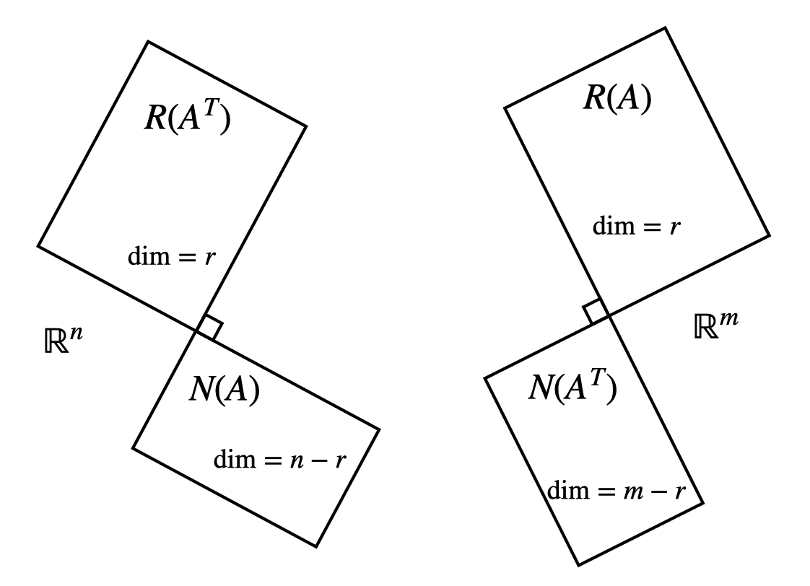
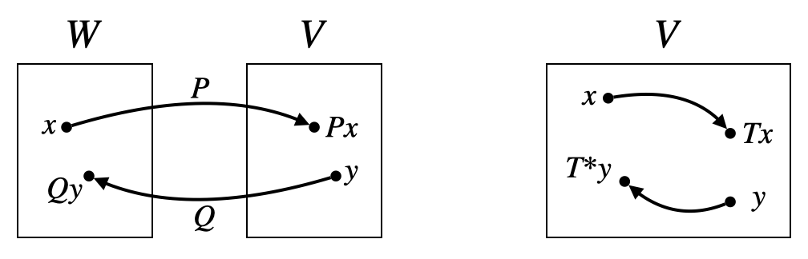

[矩阵论]1.3欧氏空间与酉空间
欧氏空间
欧氏空间（Euclid 空间、内积空间）是定义了内积运算的实数域 \(\mathbb R\) 上线性空间。
内积的定义与基本性质
满足 4 条性质：
- 交换律：\((x,y)=(y,x)\)
- 分配律：\((x,y+z)=(x,y)+(x,z)\)
- 齐次性：\((kx,y)=k(x,y),\,\forall k\in \mathbb R\)
- 非负性：\((x,x)\geq 0\)，当且仅当 \(x=0\) 时 \((x,x)=0\)
任意线性空间上都可以定义内积，但是不唯一。一种较为简单的定义方式是根据坐标定义内积（见下文）。
内积的基本性质：
- \((x,ky)=k(x,y)\)
- \((x,0)=(0,x)=0\)
- 线性性：\(\left(\sum_{i=1}^n\xi_ix_i,\sum_{j=1}^n\eta_jy_j\right)=\sum_{i=1}^n\sum_{j=1}^n\xi_i\eta_j(x_i,y_j)\)
根据坐标定义内积
设 \(X\) 为 \(V\) 上的一个基，向量 \(x,y\in V\) 在该基下的坐标分别为 \(\alpha=(\alpha_1,\ldots,\alpha_n)^T,\beta=(\beta_1,\ldots,\beta_n)^T\)，则可以定义内积为： \[ (x,y)=\alpha_1\beta_1+\cdots+\alpha_n\beta_n=\alpha^T\beta \] 容易验证这确实满足内积的 4 个条件。
这门课上内积是一个抽象的概念，只有在上述定义下可以写作 \(\alpha^T\beta\) 的形式，否则只能写成 \((x,y)\) 的形式。
这种定义方式与基的选取有关，可以推导不同基下这样定义的内积之间的关系。设 \(X'=XC\)，\(x,y\) 在 \(X'\) 下的坐标为 \(\alpha',\beta'\)，那么有：\(\alpha'=C^{-1}\alpha,\,\beta'=C^{-1}\beta\)，于是： \[ (x,y)'=(\alpha')^T\beta'=\alpha^T(C^{-1})^TC^{-1}\beta=\alpha^T A^{-1}\beta \] 其中 \(A=CC^T\) 为正定矩阵。
长度（模 / 范数）和夹角
长度（模 / 范数）：\(\Vert x\Vert=\sqrt{(x,x)}\)
夹角：\(\langle x,y\rangle=\arccos\dfrac{(x,y)}{\Vert x\Vert\Vert y\Vert}\)
Gram 矩阵与合同
定义：向量组 \(x_1,\ldots,x_n\) 组成的 Gram 矩阵为： \[ \text{Gram}(x_1,\ldots,x_n)=[(x_i,x_j)]_{ij} \] 基于 Gram 矩阵的线性无关判别定理
\(x_1,\ldots,x_n\) 线性无关的充要条件是它们组成的 Gram 矩阵非奇异。
证明：设 \(a_1x_1+\cdots+a_nx_n=0\)，则与 \(x_k\) 做内积得： \[a_1(x_k,x_1)+\cdots+a_n(x_k,x_n)=0,\quad k=1,\ldots,n\] 写作矩阵形式： \[\text{Gram}(x_1,\ldots,x_n)\begin{bmatrix}a_1\\\vdots\\a_n\end{bmatrix}=0\] 这是一个关于 \(a_1,\ldots,a_n\) 的齐次线性方程，Gram 矩阵非奇异 \(\iff\) \((a_1,\ldots,a_n)^T\) 只有零解 \(\iff\) \(x_1,\ldots,x_n\) 线性无关。
证毕。
合同
设向量组 \(X=(x_1,\ldots,x_n)\) 与向量组 \(Y=(y_1,\ldots,y_n)\) 的 Gram 矩阵分别是 \(A=\text{Gram}(X),\,B=\text{Gram}(Y)\)，且 \(Y=XC\)（即 \(C\) 是 \(Y\) 在向量组 \(X\) 下的表示矩阵），那么： \[ B=C^TAC \] 称 \(A\) 与 \(B\) 合同。
证明： \[B_{ij}=(y_i,y_j)=\left(\sum_{k=1}^nc_{ki}x_k,\sum_{l=1}^nc_{lj}x_l\right)=\sum_{k=1}^n\sum_{l=1}^nc_{ki}c_{lj}(x_k,x_l)=\sum_{k=1}^n\sum_{l=1}^nc_{ki}A_{kl}c_{lj}\] 写作矩阵形式就是 \(B=C^TAC\). 证毕。
Schwarz 不等式
\[ |(x,y)|\leq \Vert x\Vert\Vert y\Vert \]
证明：设有向量组 \(X=(x_1,\ldots,x_m)\)，设 \(y\) 可由它们线性表示：\(y=\sum_{i=1}^m\lambda_ix_i\)，则： \[F(\lambda)=\Vert y\Vert^2=(y,y)=\left(\sum_{i=1}^m\lambda_ix_i,\sum_{j=1}^m\lambda_jx_j\right)=\sum_{i=1}^m\sum_{j=1}^m\lambda_i\lambda_j(x_i,x_j)=\lambda^T \text{Gram}(X)\lambda\geq0\] 二次型 \(F(\lambda)\) 非负，故 \(\text{Gram}(X)\) 半正定，那么 \(\det(\text{Gram}(X))\geq 0\).
当 \(m=2\) 时，\(X=(x,y)\)，那么： \[\det\left(\begin{bmatrix}(x,x)&(x,y)\\(y,x)&(y,y)\end{bmatrix}\right)=(x,x)(y,y)-(x,y)(y,x)\geq 0\] 化简即得 Schwarz 不等式。
三角不等式
\[ \Vert x+y\Vert\leq \Vert x\Vert+\Vert y\Vert \]
证明： \[\Vert x+y\Vert^2=(x+y,x+y)=(x,x)+2(x,y)+(y,x)\leq \Vert x\Vert^2+2\Vert x\Vert\Vert y\Vert+\Vert y\Vert^2=(\Vert x\Vert+\Vert y\Vert)^2\] 证毕。
Reize 表示定理
欧氏空间 \(V^n\) 中所有的线性函数都可以表示为内积的形式。
即：设 \(l(x)\) 为 \(V^n\) 的一个线性函数，则存在一个向量 \(u_l\in V^n\)，使得对任一 \(x\in V^n\) 都有 \(l(x)=(u_l,x)\).
证明：取 \(V^n\) 中的一个基 \(X=(x_1,\ldots,x_n)\)，设 \(x=\sum_{i=1}^n\alpha_ix_i\)，则： \[l(x)=l\left(\sum_{i=1}^n\alpha_ix_i\right)=\sum_{i=1}^n\alpha_i l(x_i)\] 定义内积为基 \(X\) 下坐标的内积，那么构造 \(u_l\) 为对应坐标 \((l(x_1),\ldots,l(x_n))\) 的向量，即： \[u_l=X\big(l(x_1),\ldots,l(x_n)\big)=\sum_{i=1}^nl(x_i)x_i\] 那么就有 \(l(x)=(u_l,x)\). 证毕。
正交性、正交向量组、标准正交基
正交：\((x,y)=0\)，记作 \(x\perp y\).
正交向量组：两两正交的一组非零向量（注：必定线性无关）
标准正交基：单位向量组成的正交基
Gram-Schmidt 正交化过程
正交化： \[ \begin{align} &y_1=x_1\\ &y_2=x_2-\frac{(x_2,y_1)}{(y_1,y_1)}y_1\\ &y_3=x_3-\frac{(x_3,y_1)}{(y_1,y_1)}y_1-\frac{(x_3,y_2)}{(y_1,y_2)}y_2\\ &\vdots\\ &y_i=x_i-\sum_{k=1}^{i-1}\frac{(x_i,y_k)}{(y_k,y_k)}y_k\\ &\vdots \end{align} \] 归一化： \[ z_i=\frac{y_i}{\Vert y_i\Vert},\quad i=1,\ldots,n \]
证明正交性：数学归纳法，假设前 \(y_1,\ldots,y_{i-1}\) 两两正交，那么对于 \(j=1,\ldots,i-1\)，有： \[\begin{align}(y_i,y_j)&=\left(x_i-\sum_{k=1}^{i-1}\frac{(x_i,y_k)}{(y_k,y_k)}y_k,y_j\right)\\&=(x_i,y_j)-\left(\sum_{k=1}^{i-1}\frac{(x_i,y_k)}{(y_k,y_k)}y_k,y_j\right)\\&=(x_i,y_j)-\sum_{k=1}^{i-1}\frac{(x_i,y_k)}{(y_k,y_k)}(y_k,y_j)\\&=(x_i,y_j)-\frac{(x_i,y_j)}{(y_j,y_j)}(y_j,y_j)\\&=0\end{align}\] 即 \(y_i\perp y_j\). 根据归纳法，\(y_1,\ldots,y_n\) 两两正交。
子空间的正交性
设 \(V^n\) 的两个子空间 \(V_1,V_2\) 满足：\(\forall x\in V_1,\forall y\in V_2\)，\((x,y)=0\)，称 \(V_1\) 与 \(V_2\) 正交。
正交补：\(V_1^{\perp}=\{x\mid(x,y)=0,\forall y\in V_1,x\in V^n\}\).
定理：\(V_1\oplus V_1^{\perp}=V^n\).
证明：\(V_1\cap V_1^{\perp}=\{0\}\) 显然，\(V_1+V_1^{\perp}\subset V^n\) 显然，故只需证明 \(V_1+V_1^{\perp}\supset V^n\).
设 \(V_1\) 的一个正交基为 \((x_1,\ldots,x_r)\)，任取 \(z\in V^n\)，设 \(x=\sum_{i=1}^r(z,x_i)x_i\)，则只需证 \(y=z-x\in V_1^{\perp}\)，即证 \((y,x_i)=0\). \[(y,x_i)=(z-x,x_i)=\left(z-\sum_{j=1}^n(z,x_j)x_j,x_i\right)=(z,x_i)-\sum_{i=1}^n(z,x_j)(x_j,x_i)=(z,x_i)-(z,x_i)=0\] 证毕。
定理：对任意矩阵 \(A\in\mathbb R^{m\times n}\)，有： \[ \begin{align} &R^{\perp}(A)=N(A^T),\quad R(A)\oplus N(A^T)=\mathbb R^m\\ &R^{\perp}(A^T)=N(A),\quad R(A^T)\oplus N(A)=\mathbb R^n \end{align} \]
也就是说，\(R(A)\) 与 \(N(A^T)\) 互为正交补、\(R(A^T)\) 与 \(N(A)\) 互为正交补，即 Gilbert Strang 的四个基本子空间图中垂直符号的意义：

正交变换与正交矩阵
正交变换：保持长度不变，即 \(\forall x\in V,\,(Tx,Tx)=(x,x)\).
定理：\(T\) 正交的充要条件是 \(\forall x,y\in V,\,(Tx,Ty)=(x,y)\)，即保持长度不变等价于保持内积不变。
正交矩阵：方阵 \(Q\) 满足：\(Q^TQ=I\) 或 \(Q^{-1}=Q^T\). 即 \(Q\) 各列向量标准正交。
正交变换与正交矩阵：\(T\) 为正交变换的充要条件是其在标准正交基下的矩阵表示是正交矩阵。
证明：设 \(X\) 为一个标准正交基，\(TX=XA\)，任取 \(x=X\alpha\)，则 \(Tx=TX\alpha=XA\alpha\)，因此： \[(Tx,Tx)=(A\alpha)^T(A\alpha)=\alpha^TA^TA\alpha=(x,x)=\alpha^T\alpha\iff\alpha^T(I-A^TA)\alpha=0\iff A^TA=I\] 证毕。
注意必须是在标准正交基下。
正交矩阵的性质：
正交矩阵非奇异。
正交矩阵的逆仍为正交矩阵。
正交矩阵的乘积仍为正交矩阵。
正交基变换矩阵为正交矩阵。
证明：设 \(X,Y\) 为正交基，\(Y=XC\)，任取 \(x=Y\alpha=XC\alpha,\,y=Y\beta=XC\beta\)，则： \[(x,y)=\alpha^T\beta=(C\alpha)^T(C\beta)=\alpha^T(C^TC)\beta\implies C^TC=I\] 证毕。
正交矩阵的特征值位于复平面的单位圆上。
证明：设 \(A\) 为正交矩阵，\(Ax=\lambda x\ (x\neq 0)\)，则两边取共轭转置得 \(x^HA^T=\bar\lambda x^H\)（注意 \(A\) 是实矩阵，但其特征值和特征向量可能是复数）。于是： \[x^Hx=x^HA^TAx=\lambda\bar\lambda x^Hx=|\lambda|^2x^Hx\implies |\lambda|^2=1\] 证毕。
线性映射和线性变换的共轭

线性映射的共轭：设 \(P\) 是欧氏空间 \(W\) 到欧氏空间 \(V\) 的一个线性映射，\(Q\) 是欧氏空间 \(V\) 到欧氏空间 \(W\) 的一个线性映射，若对 \(\forall x\in W,y\in V\)，有：\((Px,y)=(x,Qy)\)，则称 \(Q\) 为 \(P\) 的共轭。
定理：设 \(X,Y\) 是 \(W,V\) 的标准正交基，\(P,Q\) 在 \(X,Y\) 下的矩阵表示为 \(A,B\)，则 \(B=A^T\).
证明：由于 \(PX=YA,\,QY=XB\)，所以： \[\begin{cases}(Px_j,y_i)=(\sum_{k=1}^m a_{kj}y_k,y_i)=a_{ij}\\(x_j,Qy_i)=(x_j,\sum_{k=1}^nb_{ki}x_k)=b_{ji}\end{cases}\quad\implies\quad a_{ij}=b_{ji}\] 证毕。
线性变换的共轭：设 \(T\) 是欧氏空间 \(V\) 上的一个线性变换，若对 \(\forall x,y\in V\)，有 \((Tx,y)=(x,T^\ast y)\) 成立，则称 \(T^\ast\) 为 \(T\) 的共轭。
性质：设 \(T\) 在基 \(X=(x_1,\ldots,x_n)\) 下的矩阵表示为 \(A\)，\(X\) 的 Gram 矩阵为 \(C\)，那么 \(T^\ast\) 在基 \(X\) 下的矩阵表示为 \(B=C^{-1}A^TC\).
证明：由于 \(TX=XA,\,T^\ast X=XB\)，所以： \[\begin{cases}(Tx_i,x_j)=\left(\sum_{k=1}^na_{ki}x_k,x_j\right)=\sum_{k=1}^na_{ki}(x_k,x_j)=\sum_{k=1}^na_{ki}c_{kj}\\(x_i,T^\ast x_j)=\left(x_i,\sum_{k=1}^nb_{kj}x_k\right)=\sum_{k=1}^nb_{kj}(x_i,x_k)=\sum_{k=1}^nb_{kj}c_{ik}\\\end{cases}\implies \sum_{k=1}^na_{ki}c_{kj}=\sum_{k=1}^n b_{kj}c_{ik}\] 即 \(A^TC=CB\). 证毕。
对称变换与对称矩阵
（实）对称变换：\(\forall x,y\in V,\,(Tx,y)=(x,Ty)\).
（实）对称矩阵：欧氏空间中的线性变换是实对称变换的充要条件是它在标准正交基下的矩阵为实对称矩阵。
证明：设 \(X\) 为一个标准正交基，设 \(T\) 在 \(X\) 下的矩阵表示为 \(A\)，即 \(TX=XA\).
必要性：由于 \(X\) 为标准正交基，故其 Gram 矩阵为 \(I\)，由于 \(T\) 本身就是自己的共轭，所以 \(A=I^{-1}A^TI=A^T\).
充分性： \[\begin{cases}(Tx_i,x_j)=(\sum_{k=1}^na_{ki}x_k,x_j)=a_{ji}\\(x_i,Tx_j)=(x_i,\sum_{k=1}^na_{kj}x_k)=a_{ij}\end{cases}\quad\implies\quad a_{ji}=a_{ij}\] 证毕。
性质：实对称矩阵特征值都为实数，属于不同特征值的特征向量相互正交。
证明：设 \(Ax=\lambda x\ (x\neq 0)\)，则： \[x^HAx=\lambda x^Hx=(A^Hx)^Hx=(Ax)^Hx=(\lambda x)^Hx=\bar\lambda x^Hx\implies \lambda=\bar\lambda\] 故 \(\lambda\in\mathbb R\).
再设 \(Ay=\mu y\ (y\neq 0)\) 且 \(\lambda\neq \mu\)，则： \[y^TAx=\lambda y^Tx=(A^Ty)^Tx=(Ay)^Tx=\mu y^Tx\implies y^Tx=0\] 证毕。
酉空间
酉空间将欧氏空间扩展到了复数域 \(\mathbb C\) 上。
复内积
满足 4 条性质：
- 交换律：\((x,y)=\overline{(y,x)}\)
- 分配律：\((x,y+z)=(x,y)+(x,z)\)
- 齐次性：\((kx,y)=k(x,y),\,\forall k\in \mathbb C\)
- 非负性：\((x,x)\geq 0\)，当且仅当 \(x=0\) 时 \((x,x)=0\)
根据坐标定义复内积
设 \(X\) 为 \(V\) 上的一个基，向量 \(x,y\in V\) 在该基下的坐标分别为 \(\alpha=(\alpha_1,\ldots,\alpha_n)^T,\beta=(\beta_1,\ldots,\beta_n)^T\)，则可以定义内积为： \[ (x,y)=\alpha_1\bar\beta_1+\cdots+\alpha_n\bar\beta_n=\beta^H\alpha \] 容易验证这确实满足内积的 4 个条件。
注意共轭转置取在 \(\beta\) 上，这是为了满足齐次性而导致的。在有些教材上，齐次性写作 \((x,ky)=k(x,y)\)，则内积相应地会变成 \(\alpha^H\beta\)，共轭转置取在 \(\alpha\) 上。
欧氏空间上内积的性质平行推广到复内积空间中。
酉变换和酉矩阵
可以看作正交变换和正交矩阵在复内积空间中的推广。
酉变换：保持长度不变，即 \(\forall x\in V,\,(Tx,Tx)=(x,x)\).
定理：\(T\) 是酉变换的充要条件是 \(\forall x,y\in V,\,(Tx,Ty)=(x,y)\)，即保持长度不变等价于保持内积不变。
酉矩阵：酉变换在酉空间的标准正交基下的矩阵是酉矩阵，满足 \(A^HA=AA^H=I\).
复线性映射和复线性变换的共轭：类比欧氏空间上线性映射和线性变换的共轭。
Hermite 变换和 Hermite 矩阵
可以看作对称变换和对称矩阵在复内积空间中的推广。
Hermite 变换（酉对称变换）：\(\forall x,y\in V,\,(Tx,y)=(x,Ty)\).
Hermite 矩阵：Hermite 变换在标准正交基下的矩阵 \(A\) 为 Hermite 矩阵，即 \(A=A^H\).
性质：Hermite 矩阵的特征值都是实数，属于不同特征值的特征向量相互正交。
Schur 定理
在 1.2 节中，我们证明了任意矩阵都相似于一个上三角矩阵。Schur 定理是这个定理的加强版，它限制用来相似化的矩阵是一个酉矩阵。
定理：
(1). 设 \(A\in\mathbb C^{n\times n}\)，则存在酉矩阵 \(P\) 使得： \[ P^HAP=U \] 其中 \(U\) 为上三角矩阵。
(2). 设 \(A\in\mathbb R^{n\times n}\) 且所有特征值为实数，则存在正交矩阵 \(Q\) 使得： \[ Q^TAQ=U \] 其中 \(U\) 为上三角矩阵。
证明过程与证明相似于一个上三角矩阵是类似的，只不过基扩充时需要扩充为标准正交基，所有的可逆矩阵换成酉矩阵。
正规矩阵
正规矩阵的定义
设 \(A\in\mathbb C^{n\times n}\) 且 \(A^HA=AA^H\)，称 \(A\) 为正规矩阵。
式 \(A^HA=AA^H\) 意味着 \(A\) 的 \(i,j\) 行内积等于 \(i,j\) 列内积。因此，前面提到的正交矩阵、对称矩阵、酉矩阵、Hermite 矩阵都是正规矩阵。
定理：
(1). 设 \(A\in\mathbb C^{n\times n}\)，则 \(A\) 酉相似于对角矩阵的充要条件为 \(A\) 为正规矩阵，即存在酉矩阵 \(P\) 使得 \(P^HAP=D\)，其中 \(D\) 为对角矩阵。
(2). 设 \(A\in\mathbb R^{n\times n}\) 且所有特征值为实数，则 \(A\) 正交相似于对角矩阵的充要条件为 \(A\) 为正规矩阵，即存在正交矩阵 \(Q\) 使得 \(Q^TAQ=D\)，其中 \(D\) 为对角矩阵。
证明：根据 Schur 定理，\(A\) 酉相似于一个上三角矩阵：\(P^HAP=U\). 容易证明，\(A\) 正规 \(\iff\) \(U\) 正规，因此 \(U^HU=UU^H\)，则 \(U\) 只能是对角矩阵。证毕。
推论：实对称矩阵正交相似于对角矩阵。
推论：设 \(T\) 是 \(V\) 上的对称变换，则在 \(V\) 中存在标准正交基 \(y_1,\ldots,y_n\) 使得 \(T\) 在该基下的矩阵为对角矩阵。
证明：设 \(X\) 是 \(V\) 的一组标准正交基且 \(TX=XA\)，则 \(A\) 为对称矩阵，因此存在正交矩阵 \(P\) 使得 \(A=PDP^T\)，其中 \(D\) 为对角矩阵. 取 \(Y=XP\)，则 \(TY=TXP=XAP=XPD=YD\)，故 \(D\) 为 \(T\) 在 \(Y\) 下的矩阵表示。证毕。
Hermite 矩阵的谱分解
设 \(A\) 为 Hermite 矩阵，\(\lambda_i,p_i\) 是 \(A\) 的特征值和特征向量，则： \[ A=\lambda_1p_1p_1^H+\cdots+\lambda_np_np_n^H=P\Lambda P^H \]